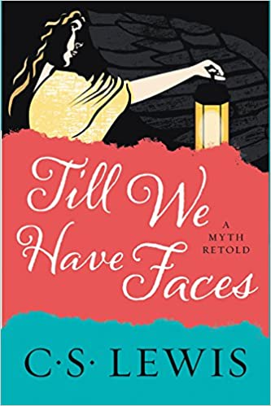

My brief thoughts on some of the books I've read recently.
My Blogs
Books so far:
Till We have Faces
Notes from the Underground
Till We Have Faces by C.S. Lewis
Written by Matthew Burkett - PM

I've heard that Lewis considered this to be one of his best books. I would say it's probably one of the best fiction books I've
ever read. The story, which is a retelling of an ancient Greek myth, is about a queen named Orual who is writing to make her case
against the "god of the mountain," who she believes wronged her.
The story begins by describing how she grew up with a kind and innocent sister, Psyche, and a wise mentor who is nicknamed "the
fox." Her father was a king who was fierce, though pious. Orual feared him except in the presence of the Priest of Ungit who could
get the king to follow almost any command fearfully. In a period of great misfortune for the kingdom, the priest conveys that Ungit
wants Psyche to be offered as a sacrifice. The king yeilds to even this command, leaving his own daughter at the top of a mountain
for a legendary monster (who serves Ungit) to take her away.
Because I don't want to spoil the story, I won't say much more about it. Orual, despite believing that Psyche's salvation was all
she desired, realizes that, after discovering Psyche alive and well, married to a mysterious god on the mountain she was left at,
she only really wanted Psyche to herself. A loss of Psyche to this god was the same as a loss of Psyche by death.
The author creatively explores themes of humanity and the justifications and misinterpretations we give to the corrupt parts of
ourselves. Indeed, as Orual does finally realize, we can't make our true case "till we have faces."
Categorized Rating Table
Category
Score
Comments
Held my attention?
9
N/A
Creative?
10
I thought that the mythology which C.S. Lewis used in his story really helped to serve the story. I've read a lot from this author and its surprising how many themes from his other nonfiction books he's able to include here in a mythological way.
Good characters?
9
The character's in the story were great. The protagonist in the story is very relatable, as I think Lewis intended her to be. Other characters are only less relatable because they are intended to represent extremes of certain worldviews.
Average Score
9.3
Notes from the Underground by Fyodor Dostoyevsky
Written by Matthew Burkett - PM
Notes from the Underground is about the worst kind of man, as the underground man admits about himself. This anonymous character has
left society to live underground so that he could think and write about his condition. He lacks all confidence, but is unaware of
this because of how boldly he makes a fool of himself as he's always on the defensive. By consequence he lacks any faith in his own
ability to cause pain to others and in his ability to even strive for the "ideal" or "good." As a result, he has never cultivated
tenderness towards others within himself and has never strived beyond his low standard for himself. The underground man never
recognizes this about himself. Instead he explains his behaviors by stating that he is a "petty man." After writing about this idea a
bit more, he quickly changes his mind, insisting that he is not petty. Rather than expanding on this, he leaves it there, willfully
ignoring the potentially dangerous ideas that might come of it.
I won't write about the things that the underground man did that were so awful as to make him "the worst kind of man" (you can read the
book if you want to learn more) but that's fine because, as I understand it, Notes from the Underground is a commentary on a certain
psychological state or worldview. What I found remarkable is how many of the things said by the underground man were also thought by me
at times when I wasn't particularly mentally healthy or before I had learned an important lesson. It's humbling to realize that this
character often represented parts of myself. While this book might be difficult to read through, it's very much worth reading.
Categorized Rating Table
Category
Score
Comments
Held my attention?
8
Certain parts of this book were hard to get through. Because the book is about a tragically pitiful man who is always complaining, it can be hard to read parts of it without wincing for him.
Creative?
9
N/A
Good characters?
10
Dostoyevsky understands the psychology of man very well. This is evident as you read his books. Even though this character is meant to represent an extreme lack of self worth, his thoughts are not so extreme, but rather surprisingly, very ordinary.